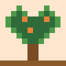

สวนพฤกษศาสตร์ไทย
สวนพฤกษศาสตร์ไทย


สวนพฤกษศาสตร์ไทย
เดินสำรวจสวนพิกเซล พบพืชสมุนไพร พืชอาหาร พืชเศรษฐกิจ และไม้ดอกไม้ประดับของประเทศไทย
เริ่มสำรวจสวนพืชแนะนำ


เลือกเส้นทางสำรวจ
พืชสมุนไพร
พืชที่ใช้ในตำรายาแผนไทย การดูแลสุขภาพในครัวเรือน และภูมิปัญญาท้องถิ่น ข้อมูลบนเว็บไซต์นี้ใช้เพื่อการเรียนรู้ ไม่ใช่คำแนะนำทางการแพทย์

พืชผักและพืชอาหาร
ผัก ผลไม้ และเครื่องปรุงที่อยู่ในอาหารไทย พร้อมส่วนที่กินได้และข้อควรระวังในการบริโภค
พืชเศรษฐกิจ
พืชที่สร้างรายได้ให้เกษตรกรและเป็นวัตถุดิบของอุตสาหกรรม ทั้งอาหาร เส้นใย น้ำมัน และยาง
ไม้ดอกไม้ประดับ
ไม้ดอกและไม้ประดับที่ใช้ตกแต่งสวน งานบูชา และเกี่ยวข้องกับความเชื่อทางวัฒนธรรม
เริ่มต้นอย่างไร
เลือกหมวดพืช
เปิดหมวดจากเมนูหรือการ์ดด้านบน
เปิดการ์ดพืช
กด “เรียนรู้เพิ่มเติม” เพื่อเข้าหน้าข้อมูลของพืชนั้น
อ่านและเปรียบเทียบ
ดูลักษณะ ประโยชน์ และข้อควรระวัง
สถานะโครงการ: ตอนนี้มีหน้าข้อมูลครบถ้วน 8 ชนิดจาก 80 ชนิด ดูรายการทั้งหมดและสถานะที่ รายการพืชทั้งหมด